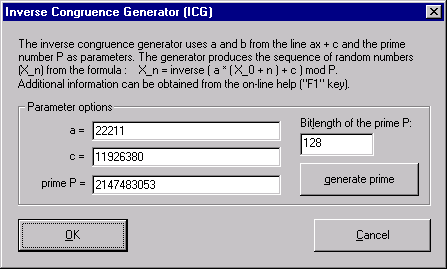

To open this dialog window, choose the option Inverse Congruence Generator (ICG) in the Generation of random numbers dialog and click the Choose generator-specific parameters button.
The Inverse Congruence Generator (ICG) is an algorithm for generating a sequence of apparently random whole numbers (X_[i]) in accordance with the recursive calculation rule:
X_[0] := secret seed value
X_[i+1] := inverse[a*(X_[0]+i) + c] (mod P) for i = 0, 1, 2, 3, ...
whereby X_[i] are whole numbers from the range 0,1,2, ..., P-1. It is customary to standardize the random numbers to the rational value range [0,1[, hence the output as rational numbers Z[i] := X_[i]/P.
In CrypTool we observe only "coin throws" ("heads" are mapped to the 0 and "tails" to the 1). In the LCG the coin throw 0 is therefore represented by the event [Z_[i] < 0.5] and the coin throw 1 by the event [0.5 <= Z_[i] < 1] ab. The sequence of coin throws is saved as a binary file (a sequence of 8 coin throws produces one random ASCII character).
The parameters in the ICG are the numbers P, a, c of the modulo P inversion of the linear equation y = ax+c: modulus P is a prime number, the multiplier a: 0<a<N and the additive increment b: 1<b<N. Moreover, the LCG is initialized through the secret initial value or seed X_0.
Select Individual Procedures \ Generate Random Numbers and activate the radio button Inverse Congruence Generator (ICG). You can now specify the ICG parameters under "Choose generator-specific parameters...".

Please note that the quality of the ICG depends critically on the choice of parameters. An important dimension here is the period length of the random sequence, which is determined by the parameters.
The quality of the output generated by the random number generator can be tested with the aid of the random tests, periodicity analysis, compressibility and the Vitányi analysis implemented in CrypTool.